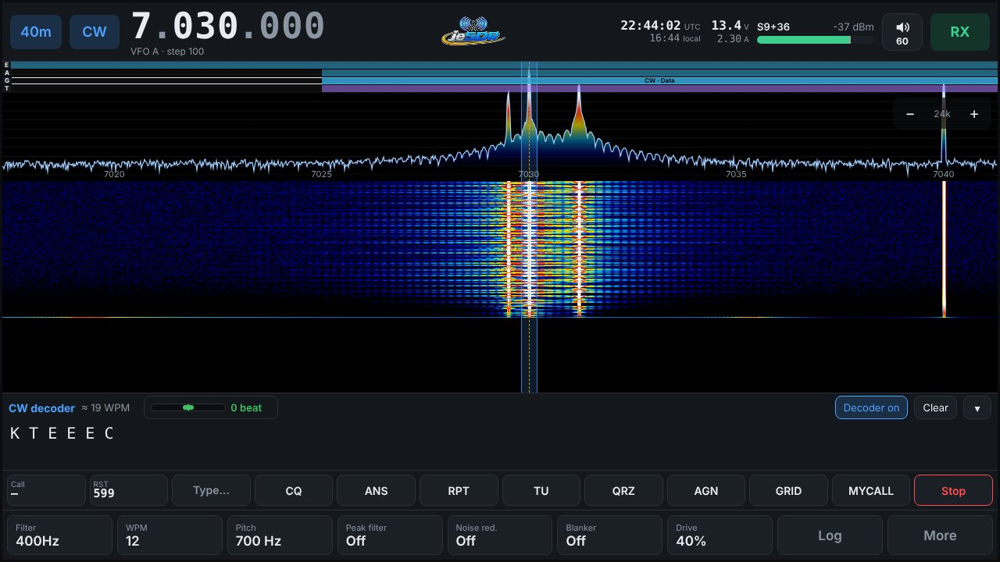
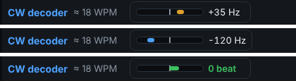
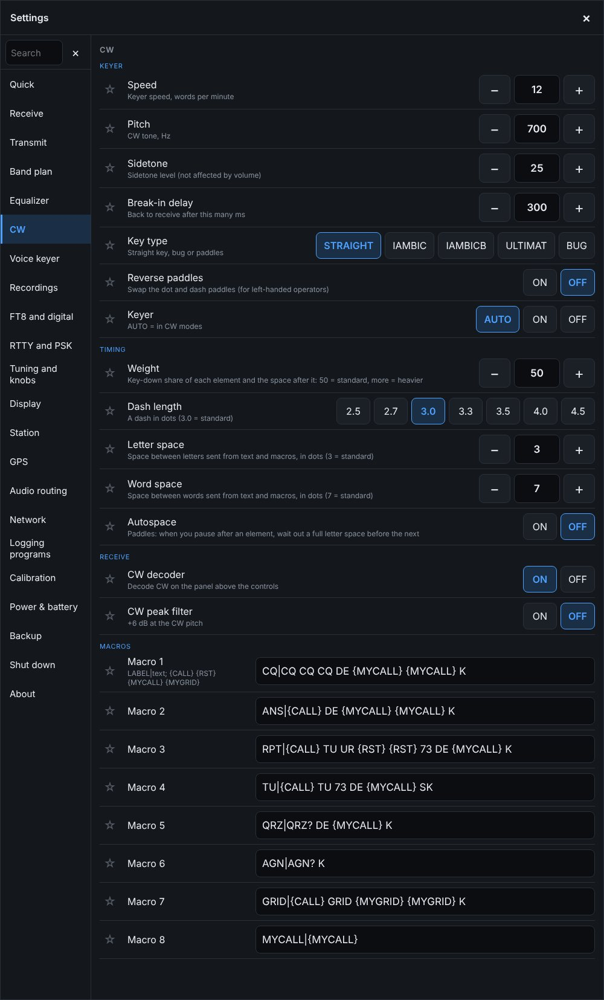
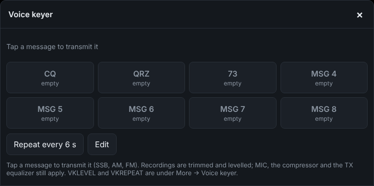

CW, voice keyer and recordings#
CW#
Choose CW (or CWR, the opposite sideband) from the mode sheet. The CW panel opens above the control strip.

The keyer#
Plug a straight key, bug or paddles into the key jack (tip = dash or straight key, ring = dot) and set More → CW → Key type:
| Key type | For |
|---|---|
| STRAIGHT | a straight key, or an external keyer |
| IAMBIC, IAMBICB | paddles, iambic mode A or B |
| ULTIMAT | paddles, the last paddle pressed wins |
| BUG | a semi-automatic bug: dots from the dot paddle, dashes by hand |
Speed (WPM), Pitch (the tone and where the CW signal sits), Sidetone (level, independent of the volume) and Break-in delay (how long after the last element the radio returns to receive) complete it. Reverse paddles swaps dot and dash for left-handed operators.
Keyer timing#
Under More → CW → Timing:
| Setting | Standard | What it does |
|---|---|---|
| Weight | 50 | How much of each element and the space after it is key-down. Above 50 the dots and dashes get longer and the spaces shorter (a heavier sound); below 50, lighter. The speed stays the same. |
| Dash length | 3.0 | A dash in dots, from 2.5 to 4.5. |
| Letter space | 3 | The space between letters sent from Type… and macros, in dots. |
| Word space | 7 | The space between words from Type… and macros, in dots. Larger letter and word spaces at a normal speed give Farnsworth-style practice. |
| Autospace | OFF | Paddles: when you pause after an element, the keyer waits out a full letter space before the next one, so letters don't run together. A paddle you touch during that wait is remembered and sent. |
Keyer decides when the jack drives the keyer: AUTO (default) in the CW modes, ON always (for CW through an HPSDR client), OFF never (the jack is then a plain PTT line).
Decoder#
The panel shows the decoded text and the estimated speed. Tune the station onto the dial marker (tap the signal on the scope). The decoder also finds a signal up to about 250 Hz off the pitch and follows it as it drifts; the panel then says how far off it is ("following +60 Hz"), and you can zero beat to center it. It follows speeds from about 5 to 55 WPM, and it does not print noise when no one is sending.
Weak signals: the decoder listens through several filters at once, each
matched to a range of speeds (a narrower filter takes out more noise at
slower speeds), and shows the text from the one whose timing fits Morse
best. In tests with computer-generated CW it copies at 20 WPM down to about
6 dB below the noise in a 2500 Hz bandwidth, and keeps up with moderate
fading. Decoder on turns it off and on (CWDEC). CW peak filter (APF) adds 6 dB at
the pitch, about 100 Hz wide.
Zero beat#
Next to the speed, the zero-beat indicator shows how far the strongest steady tone in the receive filter is from your pitch, which is how far that station is from your transmit frequency. The needle sits in the middle and turns green with "0 beat" within ±10 Hz; amber within ±50 Hz. The scale is finer near the middle and reaches ±300 Hz.

- Tap the indicator to tune onto the station (console
zerobeat), so you answer on its frequency. - It works with the decoder off, and shows "—" when there is no steady signal, or while you transmit.
- It reads the signal you hear: with several in the filter, narrow the filter or tap the one you want on the scope first.
Macros#
Below the text: Call and RST of the station you are working, Type… to send any text, eight macro buttons and Stop.
- A macro is
LABEL|text.{MYCALL},{MYGRID},{CALL}and{RST}are filled in when it is sent. - Press and hold a macro button to edit it, or edit them in More → CW → Macros.
- Text is sent by the keyer at the keyer speed. Console:
cwtext <text>,cwstop.

Keyer
| Setting | Console name | Default | Values | What it does |
|---|---|---|---|---|
| Speed | WPM | 12 | 5–50 | Keyer speed, words per minute |
| Pitch | PITCH | 700 | 100–3000 | CW tone, Hz |
| Sidetone | SIDETONE | 25 | 0–100 | Sidetone level (not affected by volume) |
| Break-in delay | CW_DELAY | 300 | 50–3000 | Back to receive after this many ms |
| Key type | CW_INPUT | STRAIGHT | STRAIGHT, IAMBIC, IAMBICB, ULTIMAT, BUG | Straight key, bug or paddles |
| Reverse paddles | CWREV | OFF | ON, OFF | Swap the dot and dash paddles (for left-handed operators) |
| Keyer | KEYER | AUTO | AUTO, ON, OFF | AUTO = in CW modes |
Timing
| Setting | Console name | Default | Values | What it does |
|---|---|---|---|---|
| Weight | CWWEIGHT | 50 | 25–75 | Key-down share of each element and the space after it: 50 = standard, more = heavier |
| Dash length | CWRATIO | 3.0 | 2.5, 2.7, 3.0, 3.3, 3.5, 4.0, 4.5 | A dash in dots (3.0 = standard) |
| Letter space | CWLSPACE | 3 | 3–9 | Space between letters sent from text and macros, in dots (3 = standard) |
| Word space | CWWSPACE | 7 | 5–21 | Space between words sent from text and macros, in dots (7 = standard) |
| Autospace | CWAUTOSP | OFF | ON, OFF | Paddles: when you pause after an element, wait out a full letter space before the next |
Receive
| Setting | Console name | Default | Values | What it does |
|---|---|---|---|---|
| CW decoder | CWDEC | ON | ON, OFF | Decode CW on the panel above the controls |
| CW peak filter | APF | OFF | ON, OFF | +6 dB at the CW pitch |
Macros
| Setting | Console name | Default | Values | What it does |
|---|---|---|---|---|
| Macro 1 | CWM1 | CQ|CQ CQ CQ DE {MYCALL} {MYCALL} K | text | LABEL|text; {CALL} {RST} {MYCALL} {MYGRID} |
| Macro 2 | CWM2 | ANS|{CALL} DE {MYCALL} {MYCALL} K | text | Same as macro 1 |
| Macro 3 | CWM3 | RPT|{CALL} TU UR {RST} {RST} 73 DE {MYCALL} K | text | Same as macro 1 |
| Macro 4 | CWM4 | TU|{CALL} TU 73 DE {MYCALL} SK | text | Same as macro 1 |
| Macro 5 | CWM5 | QRZ|QRZ? DE {MYCALL} K | text | Same as macro 1 |
| Macro 6 | CWM6 | AGN|AGN? K | text | Same as macro 1 |
| Macro 7 | CWM7 | GRID|{CALL} GRID {MYGRID} {MYGRID} K | text | Same as macro 1 |
| Macro 8 | CWM8 | MYCALL|{MYCALL} | text | Same as macro 1 |
Voice keyer#
Eight voice messages kept on the radio. Open them from the Voice keyer tile in SSB, AM and FM.

- Tap a message to transmit it in place of the microphone (mic gain, the compressor and the transmit equalizer still apply).
- Repeat sends it again every Voice keyer repeat seconds until Stop, PTT or any other transmission (handy for calling CQ).
- Edit records a message from the radio's microphone, or from this browser's microphone over HTTPS; you can listen to it on the radio's speaker or in the browser, rename it or delete it. Recordings are trimmed and leveled; each can be up to 60 s.
Console: vk play N [repeat], vk rec N, vk stop, vk delete N.
| Setting | Console name | Default | Values | What it does |
|---|---|---|---|---|
| Voice keyer level | VKLEVEL | 100 | 0–200 | Transmit level of the voice messages, % (100 = as recorded) |
| Voice keyer repeat | VKREPEAT | 6 | 1–60 | Seconds between repeats when Repeat is on |
Messages
| Setting | Console name | Default | Values | What it does |
|---|---|---|---|---|
| Message 1 label | VKM1 | CQ | text | Button label for voice message 1 |
| Message 2 label | VKM2 | QRZ | text | Button label for voice message 2 |
| Message 3 label | VKM3 | 73 | text | Button label for voice message 3 |
| Message 4 label | VKM4 | MSG 4 | text | Button label for voice message 4 |
| Message 5 label | VKM5 | MSG 5 | text | Button label for voice message 5 |
| Message 6 label | VKM6 | MSG 6 | text | Button label for voice message 6 |
| Message 7 label | VKM7 | MSG 7 | text | Button label for voice message 7 |
| Message 8 label | VKM8 | MSG 8 | text | Button label for voice message 8 |
Recordings#
More → Recordings (or ● Record on the Quick page)
records what you hear (after the filter, NR and EQ) and your microphone
while you transmit, to the radio's SD card as WAV files named by UTC time,
frequency and mode. The header shows ● REC 1:23 while recording.
The list plays a recording in the browser, downloads it or deletes it. A
recording stops by itself after 2 hours, or when less than 200 MB is free.
Console: rec start|stop|list|delete <name>.